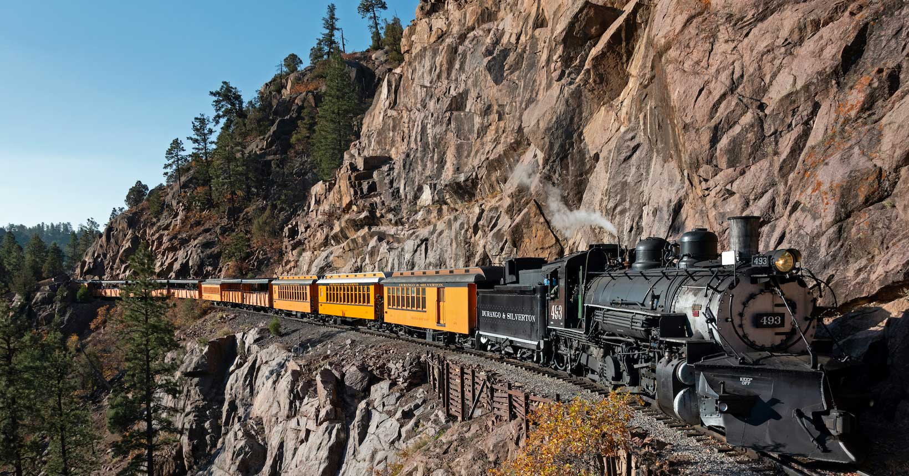

Origem das Ferrovias
A origem das ferrovias remonta ao século XIX, com o desenvolvimento do transporte ferroviário como uma alternativa eficiente ao transporte de cargas e passageiros. As primeiras ferrovias foram construídas na Inglaterra, impulsionadas pela Revolução Industrial. A partir daí, as ferrovias se espalharam por todo o mundo, desempenhando um papel crucial no desenvolvimento econômico e na interconexão de regiões e países.

Curiosidades
Aqui estão algumas curiosidades interessantes sobre trens e ferrovias:
- As ferrovias são uma das formas mais eficientes e seguras de transporte em longas distâncias.
- O trem mais rápido do mundo é o Maglev (trem de levitação magnética) no Japão, que atinge velocidades superiores a 600 km/h.
- A ferrovia transiberiana, na Rússia, é a ferrovia mais longa do mundo, estendendo-se por mais de 9.000 km.
- O sistema ferroviário do metrô de Londres é o mais antigo do mundo, inaugurado em 1863.
X